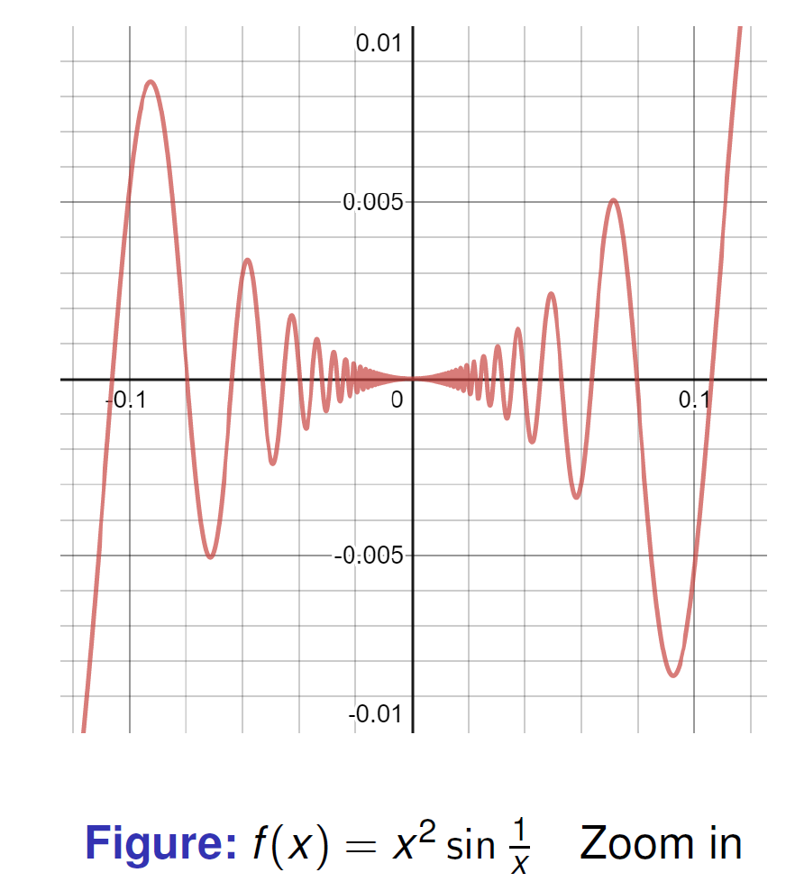
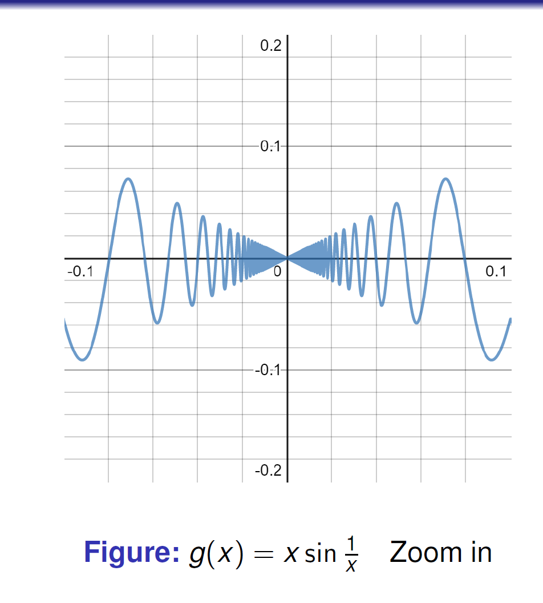
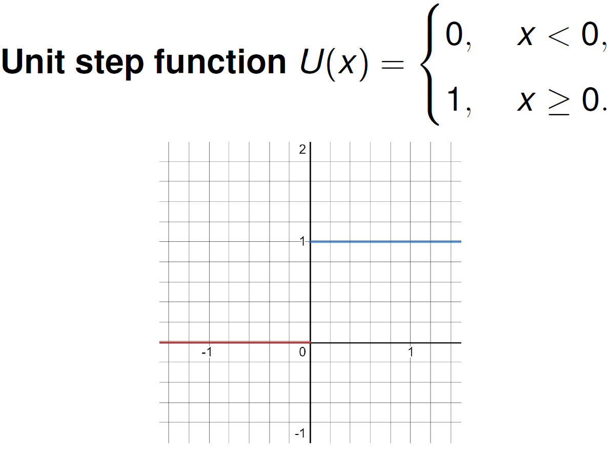
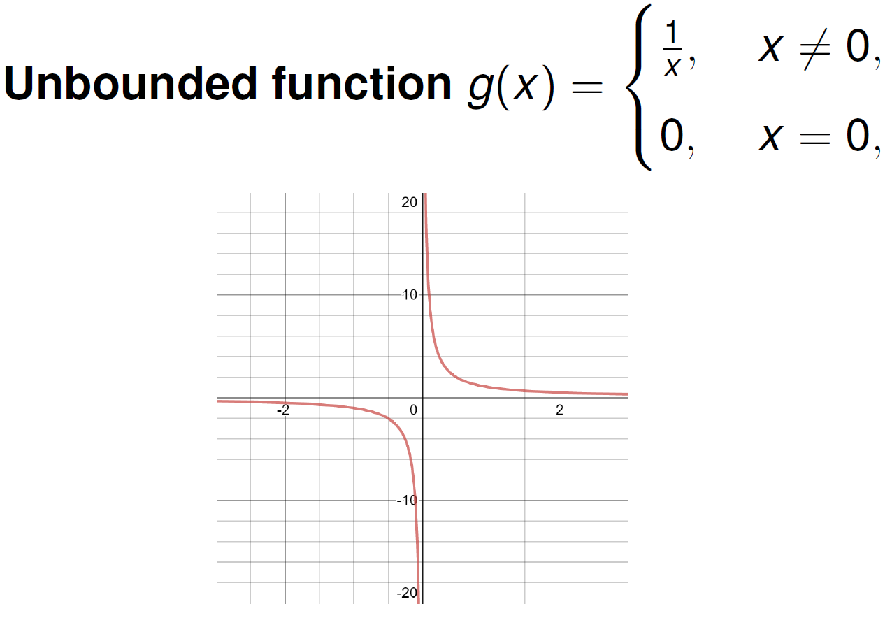
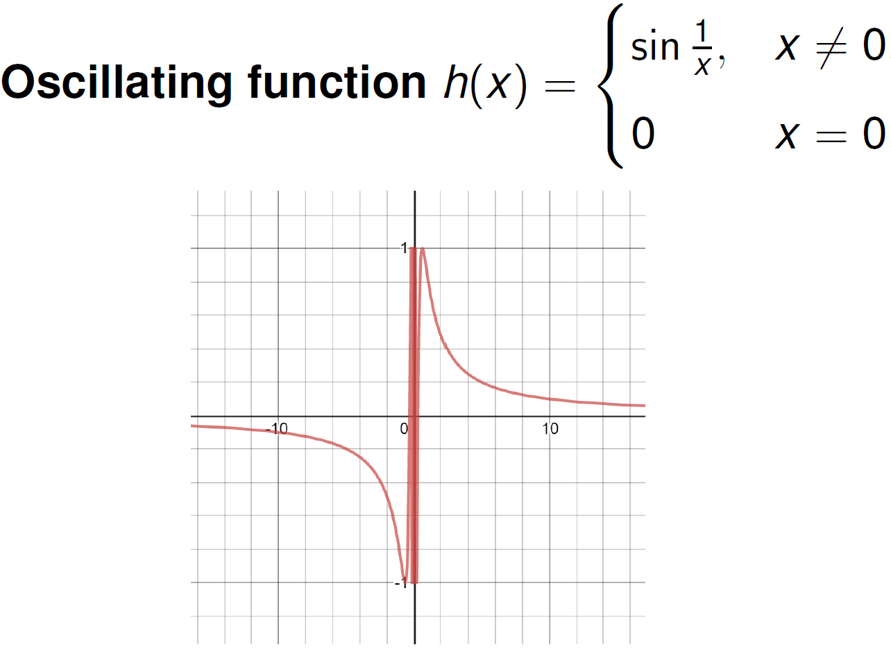
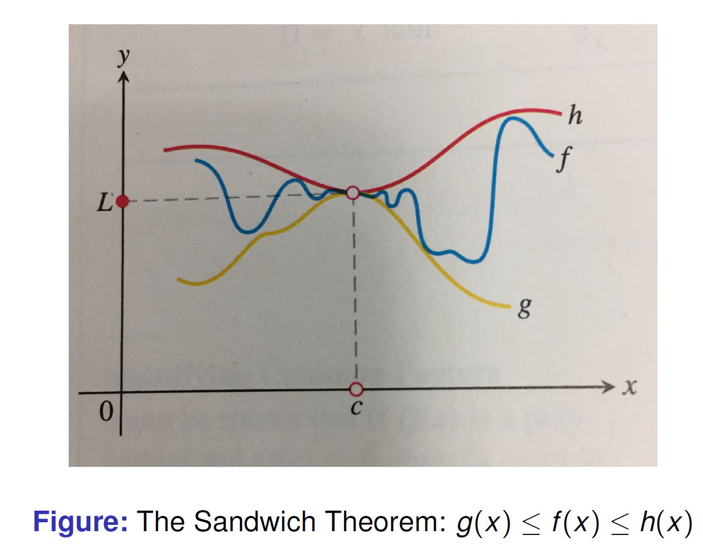
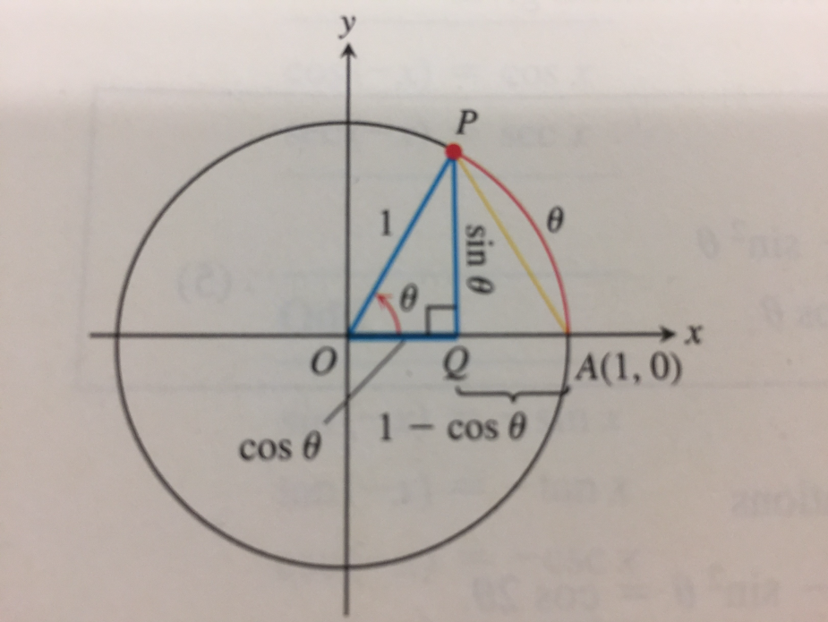
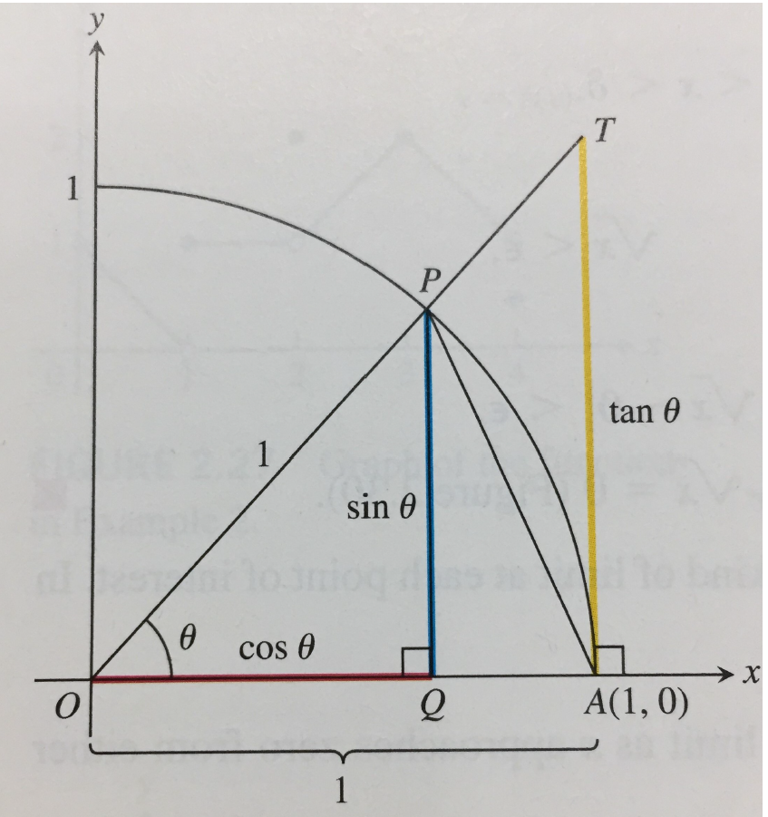
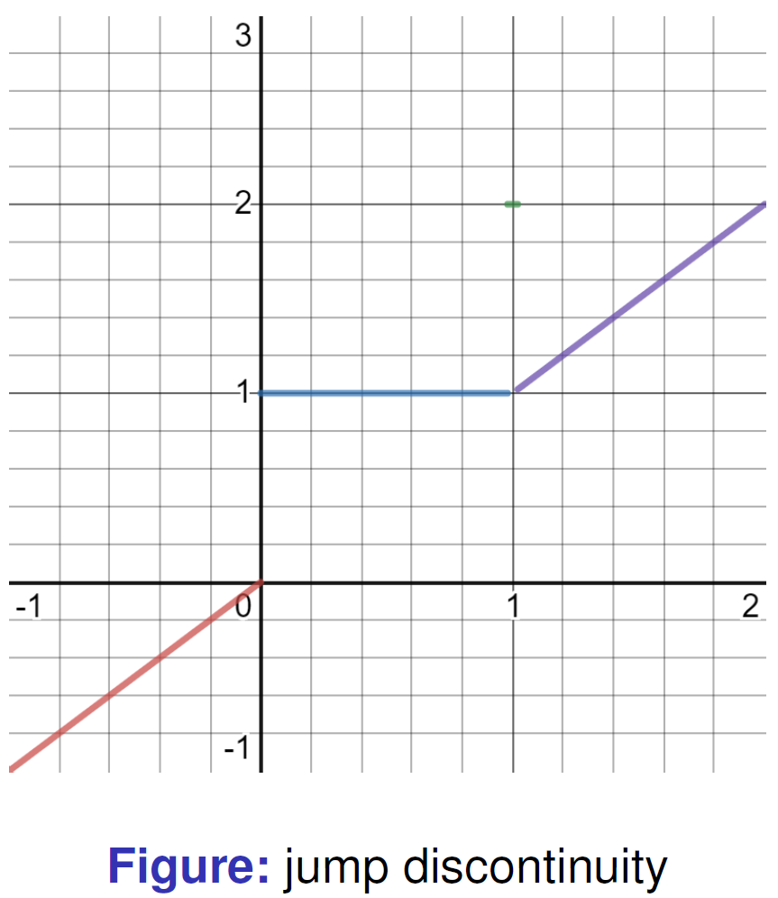

Mathematical Analysis --- Lecture 1-4
Preliminary
- $\mathbb{N}$ denotes the set of all positive integers.
- $\mathbb{Z}$ denotes the set of all integers.
- $\mathbb{Q}$ denotes the set of all rational numbers.
- $\mathbb{R}$ denotes the set of all real numbers.
Limits and Continuity
1. Key idea
We use limits to describe the tendency of a function as the variable approaches a given point, but not the value at the point.
2. Important examples
Example 1: Same limit, different value at the point


Useful estimates:
Therefore:
My takeaway:
If $x$ gets close to 0, keeping $x\ne0$, $f(x)$ approaches 0 with error $\leq |x|^2$; $g(x)$ approaches 0 with error $\leq |x|$.
Example 2: Average speed and instantaneous speed
Average speed:
With $h=t_2-t_1$:
Instantaneous speed at $t_0$:
Informal definition of limit
Assume $f(x)$ is defined on an open interval about $c$, except possibly at $c$ itself. If $f(x)$ is arbitrarily close to $L$ for all $x$ sufficiently close to $c$ other than $c$ itself, then $$\lim_{x\to c}f(x)=L.$$ This is read “the limit of $f(x)$ as $x$ approaches $c$ is $L$.”
3. Limit calculation techniques
Algebraic simplification
Rationalizing the denominator
Remark: Simplification when calculating limits.
General strategy:
- Check direct substitution.
- Factor or rationalize if necessary.
- Simplify, then evaluate the limit.
Class 2: Describing the behavior of a function as $x\to0$
1. Jump

2. Unbounded

3. Oscillation

4. When a limit does not exist
| Type | What happens near the point? | Example |
|---|---|---|
| Jump | Left and right sides approach different values | Unit step function |
| Unbounded | Function values grow without bound | $1/x$ near 0 |
| Oscillation | Values do not approach one fixed number | $\sin(1/x)$ near 0 |
A few words
I will take notes in class every time, and I will post them to my personal website. The notes will include the main points of the lecture, and I will try to make them as clear as possible. However, I will not be able to include all the details, so please make sure to attend the lectures. Also, I will not be writing down every single example, so please make sure to read the textbook and do the exercises.
Lecture 2
Definition of limit (Informal)
By the informal description of a limit: if $x$ gets sufficiently close to $4$, but is not equal to $4$, then $g(x)$ gets arbitrarily close to $8$.
We need to show that the gap between $g(x)$ and $L=8$, namely $|g(x)-8|$, can be made as small as we choose if $x$ is kept close enough to $c=4$, but is not equal to $4$.
Definition
Let $f(x)$ be defined on an open interval $I$ about $c$, except possibly at $c$ itself. We say that the limit of $f(x)$ as $x$ approaches $c$ is the number $L$, and write
if, for every $\varepsilon>0$, there exists a corresponding $\delta>0$ such that
Simpler writing
We say $\lim_{x\to c}f(x)=L$ if, for any $\varepsilon>0$, there exists $\delta>0$ such that
Personal interpretation
- $\varepsilon$: how close we require $f(x)$ to be to $L$.
- $\delta$: how close $x$ needs to be to $c$ in order to satisfy that requirement.
- $|f(x)-L|<\varepsilon$: $f(x)$ lies within an $\varepsilon$-neighborhood of $L$.
- $0<|x-c|<\delta$: $x$ lies within a $\delta$-neighborhood of $c$, but $x\ne c$.
The key idea is
such that
In other words, $\varepsilon$ is the required accuracy for the output, while $\delta$ is how much accuracy we need for the input.
Thus, the $\varepsilon$-$\delta$ definition gives a precise mathematical meaning to the intuitive statement: if $x$ is sufficiently close to $c$, then $f(x)$ is sufficiently close to $L$.
Useful remarks
We shall often use the following arguments:
- Let $a$ be a real number. If, for every $\varepsilon>0$, we have $a\leq\varepsilon$, then $a\leq0$.
- Let $a$ be a real number. If, for every $\varepsilon>0$, we have $$-\varepsilon\leq a\leq\varepsilon,$$ then $a=0$.
Example: revisiting $g(x)$
Show that
Analysis. For every $\varepsilon>0$, we need
which requires
Proof. Given arbitrary $\varepsilon>0$, take
Then
whenever $0<|x-4|<\delta$. By the definition of limit,
Exercise
Prove that
Hint. Restrict $x$ by taking $x>\frac12$. Then
Exercise 1.1.5 revisited
Using the definition of limit, prove that the following functions have no limit as $x\to0$.
(a)
(b)
(c)
Tip. Suppose the limit exists and derive a contradiction.
For (b). Suppose $$\lim_{x\to0}\frac{1}{x}=L.$$ Use the definition of the limit with $\varepsilon_0=1$.
Lecture 3
Date: 2026.9.10
Theorem 1.1.3 (Limit Laws)
Assume that
(a) Sum Rule
(b) Product Rule
(c) Quotient Rule
If $M\ne0$, then
Remark: Does the Converse Hold?
The Sum Rule requires that both limits on the right-hand side exist. In general, the converse is false: the existence of $$\lim_{x\to c}(f(x)+g(x))$$ does not imply that both $\lim_{x\to c}f(x)$ and $\lim_{x\to c}g(x)$ exist.
Counterexample
Consider $x\to0$. Although $$\lim_{x\to0}\sin\frac{1}{x}$$ does not exist, we have $$f(x)+g(x)=0.$$ Therefore, $$\lim_{x\to0}(f(x)+g(x))=0$$ exists. Thus,
The problematic behavior of two functions can cancel each other out.
Exercise 1.1.9 (Limits of Polynomials)
then
Exercise 1.1.10 (Limits of Rational Functions)
If $P(x)$ and $Q(x)$ are polynomials and $Q(c)\ne0$, then
Theorem 1.1.4 (The Sandwich Theorem)
Suppose that
for all $x$ in some open interval containing $c$, except possibly at $x=c$. Suppose also that
Then

Exercise 1.1.12
Assume $I$ is an open interval, $c\in I$, and $$f(x)\leq b\qquad\text{for all }x\in I\setminus\{c\}.$$ Then $$\lim_{x\to c}f(x)\leq b,$$ provided the limit exists.
Exercise 1.1.13 (Order-preserving Property of Limits)
If $$f(x)\leq g(x)$$ for all $x$ in some open interval containing $c$, except possibly at $x=c$, and both limits exist, then
Limits preserve the non-strict inequality $\leq$, but may not preserve the strict inequality $<$. For example, let
For $x\ne0$, $f(x)<g(x)$, but
Lemma 1.1.5
For $\theta$ measured in radians,
In particular, for $0<\theta\leq\dfrac{\pi}{2}$,

One-sided Limits
Left-hand limit
if, for every $\varepsilon>0$, there exists $\delta>0$ such that
Right-hand limit
if, for every $\varepsilon>0$, there exists $\delta>0$ such that
The two-sided limit exists if and only if the one-sided limits both exist and are equal:
Examples at $x\to0$
Example 1: The $0$-$1$ step function.
Then
so the two-sided limit does not exist.
Example 2: The function $1/x$.
Thus, $1/x$ has no finite two-sided limit at $0$.
Example 3: The oscillating function $\sin(1/x)$.
both do not exist.
The density of $\mathbb{Q}$ in $\mathbb{R}$.
We say that $\mathbb{Q}$ is dense in $\mathbb{R}$ if every non-empty open interval contains a rational number. For any $a,b\in\mathbb{R}$ with $a<b$, there exists $q\in\mathbb{Q}$ such that
Equivalently, for every $x\in\mathbb{R}$ and every $\varepsilon>0$, there exists $q\in\mathbb{Q}$ such that
The irrational numbers are also dense in $\mathbb{R}$.
Example 4: The Dirichlet function.
Every interval to the left or right of $0$ contains both rational and irrational numbers. Hence,
both do not exist.
Theorem 1.1.6
Suppose that $f(x)$ is defined on an open interval containing $c$, except possibly at $c$ itself. Then $f(x)$ has a limit as $x$ approaches $c$ if and only if its left-hand and right-hand limits both exist and are equal:
Proof
If $\lim_{x\to c}f(x)=L$, the $\varepsilon$-$\delta$ condition immediately implies the same estimate for $x<c$ and for $x>c$. Therefore both one-sided limits equal $L$.
Conversely, suppose both one-sided limits equal $L$. Given $\varepsilon>0$, choose $\delta_1,\delta_2>0$ from the left- and right-hand definitions and let
If $0<|x-c|<\delta$, then either $c-\delta<x<c$ or $c<x<c+\delta$. In either case, $$|f(x)-L|<\varepsilon.$$ Thus $\lim_{x\to c}f(x)=L$.
Theorem 1.1.7
For $\theta$ measured in radians,

Proof
For $0<\theta<\dfrac{\pi}{2}$,
Since $\lim_{\theta\to0}\cos\theta=1$, the Sandwich Theorem gives
For $\theta<0$,
so the left-hand limit is also $1$. Therefore,
Consequences
For any constant $k\ne0$,
Also,
and, for $n$ nested sine functions,
Proof of $\displaystyle\lim_{x\to0}\frac{\sin(\sin x)}{x}=1$
Since $\lim_{x\to0}\sin x=0$, Theorem 1.1.7 gives
Moreover,
Therefore,
Lecture 4
Example 1.1.19

Definition 1.1.8 (Continuity at a Point)
Let $c$ be a real number that is either an interior point or an endpoint of an interval in the domain of $f$.
(a) Interior point
$f$ is continuous at $c$ if
(b) Right-continuity
$f$ is right-continuous at $c$ (or continuous from the right) if
(c) Left-continuity
$f$ is left-continuous at $c$ (or continuous from the left) if